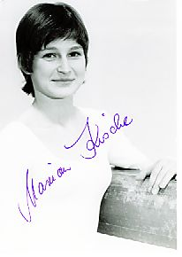

Marion Kische (GDR)
1975 Blume Memorial AA
Champion 
Medal Total
Olympic Games: 1 Bronze
Competition Results
1975
Blume Memorial: 1st AA
GDR Championships: 3rd AA, 1st B, 2nd UB, 3rd FX, 5th V
GDR Cup: 2nd AA
1976
Chunichi Cup: 6th AA
FRG-GDR Dual Meet: 1st Team, 5th AA
GDR Championships: 3rd AA, 1st UB, 3rd B, 3rd FX
GDR-CUB Dual Meet: 1st Team, 4th AA
Olympic Games: 3rd Team, 8th AA, 4th UB, 5th FX
Tokyo Cup: 2nd UB, 3rd B
1977
Fout Cities Cup: 2nd AA
This page was last updated on
November 08, 2005.
© Gymn Forum